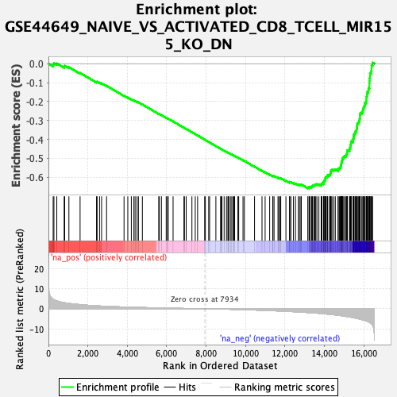
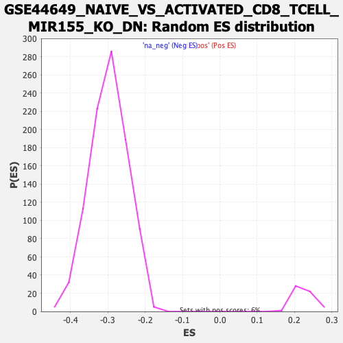

| | | Dataset | DE_genes2 |
| Phenotype | NoPhenotypeAvailable |
| Upregulated in class | na_neg |
| GeneSet | GSE44649_NAIVE_VS_ACTIVATED_CD8_TCELL_MIR155_KO_DN |
| Enrichment Score (ES) | -0.65780365 |
| Normalized Enrichment Score (NES) | -2.2038205 |
| Nominal p-value | 0.0 |
| FDR q-value | 0.0 |
| FWER p-Value | 0.0 |
Table: GSEA Results Summary

Fig 1: Enrichment plot: GSE44649_NAIVE_VS_ACTIVATED_CD8_TCELL_MIR155_KO_DN
Profile of the Running ES Score & Positions of GeneSet Members on the Rank Ordered List
| PROBE | GENE SYMBOL | GENE_TITLE | RANK IN GENE LIST | RANK METRIC SCORE | RUNNING ES | CORE ENRICHMENT | | 1 | SPECC1 | | | 240 | 4.738 | -0.0050 | No |
| 2 | RPS6KB2 | | | 279 | 4.530 | 0.0019 | No |
| 3 | IFIT1 | | | 424 | 3.910 | 0.0011 | No |
| 4 | TSPAN2 | | | 797 | 3.054 | -0.0155 | No |
| 5 | SNAPIN | | | 825 | 3.000 | -0.0110 | No |
| 6 | GALNT11 | | | 1038 | 2.690 | -0.0185 | No |
| 7 | CASP7 | | | 1606 | 2.083 | -0.0489 | No |
| 8 | ZFP36L1 | | | 2439 | 1.470 | -0.0968 | No |
| 9 | TIRAP | | | 2467 | 1.460 | -0.0955 | No |
| 10 | SMIM3 | | | 2593 | 1.394 | -0.1003 | No |
| 11 | ATP11A | | | 2696 | 1.340 | -0.1038 | No |
| 12 | TPK1 | | | 2949 | 1.216 | -0.1167 | No |
| 13 | CNNM4 | | | 3835 | 0.884 | -0.1690 | No |
| 14 | SLC35E2B | | | 4026 | 0.831 | -0.1790 | No |
| 15 | CD274 | | | 4205 | 0.776 | -0.1883 | No |
| 16 | RND3 | | | 4335 | 0.739 | -0.1947 | No |
| 17 | ADCY7 | | | 4396 | 0.722 | -0.1969 | No |
| 18 | CREBL2 | | | 4492 | 0.695 | -0.2012 | No |
| 19 | RNLS | | | 4565 | 0.673 | -0.2043 | No |
| 20 | RREB1 | | | 4764 | 0.621 | -0.2151 | No |
| 21 | SFT2D3 | | | 5594 | 0.428 | -0.2649 | No |
| 22 | KIF9 | | | 5626 | 0.421 | -0.2660 | No |
| 23 | SSC5D | | | 5731 | 0.399 | -0.2715 | No |
| 24 | PARP8 | | | 5973 | 0.351 | -0.2856 | No |
| 25 | DYM | | | 6037 | 0.338 | -0.2887 | No |
| 26 | BTBD10 | | | 6076 | 0.332 | -0.2904 | No |
| 27 | ZNF157 | | | 6322 | 0.281 | -0.3048 | No |
| 28 | GPM6B | | | 6874 | 0.175 | -0.3381 | No |
| 29 | KBTBD7 | | | 6898 | 0.171 | -0.3392 | No |
| 30 | C14orf28 | | | 6989 | 0.158 | -0.3444 | No |
| 31 | MAN1A1 | | | 7278 | 0.101 | -0.3618 | No |
| 32 | RASGRP3 | | | 7447 | 0.074 | -0.3719 | No |
| 33 | GCA | | | 7566 | 0.054 | -0.3790 | No |
| 34 | C7orf25 | | | 7924 | 0.001 | -0.4008 | No |
| 35 | TULP4 | | | 7961 | -0.005 | -0.4030 | No |
| 36 | ACVR2A | | | 8129 | -0.030 | -0.4132 | No |
| 37 | SLC31A1 | | | 8175 | -0.038 | -0.4158 | No |
| 38 | BHLHB9 | | | 8493 | -0.091 | -0.4350 | No |
| 39 | NFS1 | | | 8731 | -0.137 | -0.4493 | No |
| 40 | FBXO3 | | | 8762 | -0.146 | -0.4508 | No |
| 41 | REL | | | 8803 | -0.152 | -0.4529 | No |
| 42 | LRBA | | | 8911 | -0.173 | -0.4591 | No |
| 43 | PRKAR2B | | | 9031 | -0.200 | -0.4660 | No |
| 44 | MED23 | | | 9102 | -0.214 | -0.4698 | No |
| 45 | SNORD89 | | | 9120 | -0.218 | -0.4704 | No |
| 46 | GPR155 | | | 9147 | -0.225 | -0.4716 | No |
| 47 | ARHGAP6 | | | 9229 | -0.249 | -0.4760 | No |
| 48 | COG5 | | | 9299 | -0.265 | -0.4797 | No |
| 49 | KLHL20 | | | 9372 | -0.282 | -0.4835 | No |
| 50 | ANKRD10 | | | 9398 | -0.288 | -0.4845 | No |
| 51 | CSTF2 | | | 9445 | -0.302 | -0.4867 | No |
| 52 | RNPC3 | | | 9611 | -0.342 | -0.4960 | No |
| 53 | HEATR5B | | | 9650 | -0.352 | -0.4977 | No |
| 54 | RASAL2 | | | 9869 | -0.419 | -0.5101 | No |
| 55 | FBXL5 | | | 9939 | -0.440 | -0.5135 | No |
| 56 | PDCL | | | 10454 | -0.604 | -0.5437 | No |
| 57 | INTS12 | | | 10833 | -0.739 | -0.5653 | No |
| 58 | ZNHIT3 | | | 10991 | -0.799 | -0.5732 | No |
| 59 | HACL1 | | | 11221 | -0.891 | -0.5854 | No |
| 60 | RALGAPA1 | | | 11377 | -0.959 | -0.5930 | No |
| 61 | PAPOLG | | | 11388 | -0.964 | -0.5916 | No |
| 62 | AFF4 | | | 11444 | -0.986 | -0.5930 | No |
| 63 | WASL | | | 11643 | -1.062 | -0.6029 | No |
| 64 | AP5M1 | | | 11679 | -1.079 | -0.6028 | No |
| 65 | MED14 | | | 11746 | -1.107 | -0.6046 | No |
| 66 | CDYL | | | 11784 | -1.123 | -0.6046 | No |
| 67 | SMURF2 | | | 12046 | -1.243 | -0.6180 | No |
| 68 | CDK7 | | | 12229 | -1.340 | -0.6264 | No |
| 69 | DCTN6 | | | 12237 | -1.343 | -0.6241 | No |
| 70 | PGM3 | | | 12298 | -1.373 | -0.6250 | No |
| 71 | INTS6 | | | 12427 | -1.437 | -0.6299 | No |
| 72 | NVL | | | 12529 | -1.491 | -0.6330 | No |
| 73 | PRIM2 | | | 12678 | -1.578 | -0.6389 | No |
| 74 | RNF13 | | | 12732 | -1.604 | -0.6388 | No |
| 75 | ZFP62 | | | 12803 | -1.649 | -0.6397 | No |
| 76 | MTMR6 | | | 12827 | -1.670 | -0.6377 | No |
| 77 | SLC39A10 | | | 13156 | -1.865 | -0.6540 | Yes |
| 78 | PEX12 | | | 13217 | -1.900 | -0.6538 | Yes |
| 79 | NUP205 | | | 13228 | -1.907 | -0.6505 | Yes |
| 80 | SLC19A2 | | | 13281 | -1.942 | -0.6497 | Yes |
| 81 | ALG10 | | | 13352 | -1.995 | -0.6500 | Yes |
| 82 | CNEP1R1 | | | 13372 | -2.010 | -0.6470 | Yes |
| 83 | TBP | | | 13392 | -2.021 | -0.6441 | Yes |
| 84 | USP38 | | | 13462 | -2.074 | -0.6441 | Yes |
| 85 | PARP1 | | | 13479 | -2.088 | -0.6408 | Yes |
| 86 | DDX52 | | | 13519 | -2.108 | -0.6389 | Yes |
| 87 | MYEF2 | | | 13560 | -2.139 | -0.6370 | Yes |
| 88 | PLS3 | | | 13619 | -2.177 | -0.6361 | Yes |
| 89 | NCBP2 | | | 13718 | -2.255 | -0.6375 | Yes |
| 90 | DZIP3 | | | 13833 | -2.358 | -0.6396 | Yes |
| 91 | EPS8 | | | 13848 | -2.369 | -0.6357 | Yes |
| 92 | SLC25A40 | | | 13872 | -2.387 | -0.6322 | Yes |
| 93 | RFC5 | | | 13956 | -2.460 | -0.6323 | Yes |
| 94 | RP2 | | | 13959 | -2.466 | -0.6274 | Yes |
| 95 | GTF2A2 | | | 13961 | -2.467 | -0.6224 | Yes |
| 96 | OSGIN2 | | | 13982 | -2.482 | -0.6186 | Yes |
| 97 | ZNF546 | | | 14025 | -2.515 | -0.6160 | Yes |
| 98 | BLZF1 | | | 14044 | -2.538 | -0.6119 | Yes |
| 99 | CSGALNACT2 | | | 14046 | -2.543 | -0.6068 | Yes |
| 100 | ASF1B | | | 14048 | -2.550 | -0.6017 | Yes |
| 101 | CLINT1 | | | 14086 | -2.585 | -0.5987 | Yes |
| 102 | C1GALT1 | | | 14143 | -2.639 | -0.5967 | Yes |
| 103 | ZFAND4 | | | 14153 | -2.648 | -0.5919 | Yes |
| 104 | NKRF | | | 14166 | -2.657 | -0.5872 | Yes |
| 105 | RBMX | | | 14261 | -2.749 | -0.5873 | Yes |
| 106 | RBM34 | | | 14287 | -2.774 | -0.5832 | Yes |
| 107 | KBTBD8 | | | 14301 | -2.783 | -0.5783 | Yes |
| 108 | DHODH | | | 14312 | -2.795 | -0.5732 | Yes |
| 109 | GRSF1 | | | 14327 | -2.810 | -0.5684 | Yes |
| 110 | ZBTB33 | | | 14341 | -2.819 | -0.5634 | Yes |
| 111 | MTFMT | | | 14386 | -2.868 | -0.5603 | Yes |
| 112 | PBRM1 | | | 14475 | -2.959 | -0.5596 | Yes |
| 113 | ZNF654 | | | 14551 | -3.047 | -0.5580 | Yes |
| 114 | TMEM263 | | | 14694 | -3.237 | -0.5601 | Yes |
| 115 | EFCAB7 | | | 14696 | -3.239 | -0.5535 | Yes |
| 116 | PDSS1 | | | 14763 | -3.317 | -0.5508 | Yes |
| 117 | PKN2 | | | 14803 | -3.362 | -0.5463 | Yes |
| 118 | SCAI | | | 14827 | -3.393 | -0.5408 | Yes |
| 119 | STRADB | | | 14842 | -3.412 | -0.5347 | Yes |
| 120 | KATNBL1 | | | 14853 | -3.430 | -0.5284 | Yes |
| 121 | RAB21 | | | 14865 | -3.444 | -0.5220 | Yes |
| 122 | NUP160 | | | 14887 | -3.486 | -0.5162 | Yes |
| 123 | TRMT11 | | | 14895 | -3.501 | -0.5095 | Yes |
| 124 | TRNT1 | | | 14916 | -3.532 | -0.5035 | Yes |
| 125 | SUCLG2 | | | 14928 | -3.545 | -0.4969 | Yes |
| 126 | HSDL2 | | | 14976 | -3.609 | -0.4925 | Yes |
| 127 | SHPRH | | | 15020 | -3.669 | -0.4876 | Yes |
| 128 | RNFT1 | | | 15090 | -3.776 | -0.4841 | Yes |
| 129 | TRDMT1 | | | 15118 | -3.806 | -0.4780 | Yes |
| 130 | LRIF1 | | | 15153 | -3.852 | -0.4723 | Yes |
| 131 | SIRT1 | | | 15154 | -3.852 | -0.4644 | Yes |
| 132 | MYO5A | | | 15158 | -3.859 | -0.4567 | Yes |
| 133 | PANK3 | | | 15271 | -4.066 | -0.4553 | Yes |
| 134 | DENND4C | | | 15277 | -4.075 | -0.4473 | Yes |
| 135 | BRIX1 | | | 15310 | -4.126 | -0.4408 | Yes |
| 136 | ORC4 | | | 15318 | -4.149 | -0.4328 | Yes |
| 137 | SLC30A6 | | | 15336 | -4.177 | -0.4253 | Yes |
| 138 | FBXO11 | | | 15346 | -4.196 | -0.4173 | Yes |
| 139 | PDE3B | | | 15361 | -4.223 | -0.4096 | Yes |
| 140 | CEP192 | | | 15451 | -4.390 | -0.4061 | Yes |
| 141 | RIOK2 | | | 15454 | -4.393 | -0.3972 | Yes |
| 142 | NPAT | | | 15482 | -4.450 | -0.3898 | Yes |
| 143 | TAF2 | | | 15489 | -4.460 | -0.3811 | Yes |
| 144 | RPS6KA3 | | | 15496 | -4.469 | -0.3724 | Yes |
| 145 | CEP70 | | | 15552 | -4.586 | -0.3664 | Yes |
| 146 | TMED5 | | | 15569 | -4.630 | -0.3579 | Yes |
| 147 | DEPDC7 | | | 15618 | -4.759 | -0.3512 | Yes |
| 148 | BORA | | | 15631 | -4.778 | -0.3422 | Yes |
| 149 | CDC25C | | | 15648 | -4.802 | -0.3333 | Yes |
| 150 | AP1AR | | | 15654 | -4.828 | -0.3238 | Yes |
| 151 | FLVCR1 | | | 15669 | -4.851 | -0.3148 | Yes |
| 152 | GNA13 | | | 15733 | -4.964 | -0.3085 | Yes |
| 153 | USP45 | | | 15764 | -5.038 | -0.3001 | Yes |
| 154 | RPE | | | 15783 | -5.081 | -0.2908 | Yes |
| 155 | C18orf54 | | | 15803 | -5.136 | -0.2815 | Yes |
| 156 | GNPNAT1 | | | 15804 | -5.139 | -0.2710 | Yes |
| 157 | DPY19L4 | | | 15816 | -5.172 | -0.2612 | Yes |
| 158 | R3HDM1 | | | 15896 | -5.379 | -0.2550 | Yes |
| 159 | ARID4B | | | 15946 | -5.498 | -0.2468 | Yes |
| 160 | CHEK1 | | | 15965 | -5.552 | -0.2366 | Yes |
| 161 | METTL15 | | | 15996 | -5.652 | -0.2269 | Yes |
| 162 | GABPA | | | 16037 | -5.793 | -0.2176 | Yes |
| 163 | TCERG1 | | | 16055 | -5.827 | -0.2067 | Yes |
| 164 | CCNE2 | | | 16115 | -5.986 | -0.1981 | Yes |
| 165 | MELK | | | 16129 | -6.045 | -0.1866 | Yes |
| 166 | ZFYVE16 | | | 16132 | -6.053 | -0.1744 | Yes |
| 167 | POLK | | | 16154 | -6.141 | -0.1632 | Yes |
| 168 | ARID2 | | | 16165 | -6.193 | -0.1512 | Yes |
| 169 | RAD51AP1 | | | 16221 | -6.439 | -0.1414 | Yes |
| 170 | BDP1 | | | 16235 | -6.496 | -0.1289 | Yes |
| 171 | SMARCAD1 | | | 16278 | -6.759 | -0.1177 | Yes |
| 172 | RIF1 | | | 16279 | -6.762 | -0.1040 | Yes |
| 173 | HAUS6 | | | 16286 | -6.800 | -0.0905 | Yes |
| 174 | KIAA0586 | | | 16292 | -6.834 | -0.0768 | Yes |
| 175 | ATAD5 | | | 16312 | -6.915 | -0.0639 | Yes |
| 176 | CCDC88A | | | 16315 | -6.955 | -0.0499 | Yes |
| 177 | FOXN2 | | | 16373 | -7.408 | -0.0382 | Yes |
| 178 | LIN54 | | | 16389 | -7.604 | -0.0237 | Yes |
| 179 | YTHDC2 | | | 16392 | -7.621 | -0.0083 | Yes |
| 180 | TTK | | | 16444 | -8.189 | 0.0053 | Yes |
Table: GSEA details [plain text format]

Fig 2: GSE44649_NAIVE_VS_ACTIVATED_CD8_TCELL_MIR155_KO_DN: Random ES distribution
Gene set null distribution of ES for GSE44649_NAIVE_VS_ACTIVATED_CD8_TCELL_MIR155_KO_DN